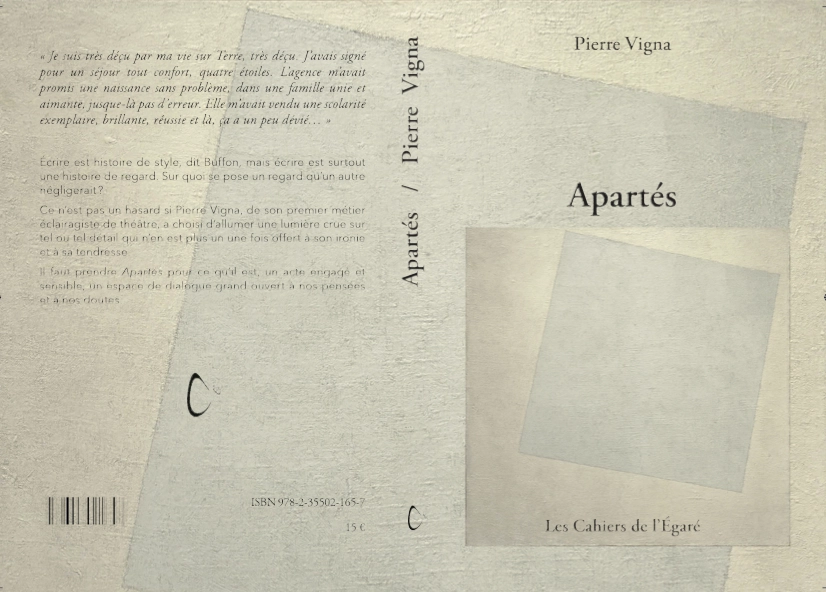
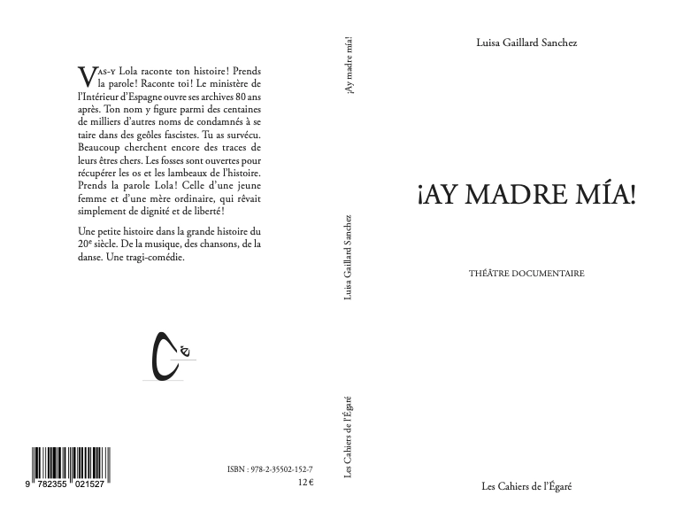
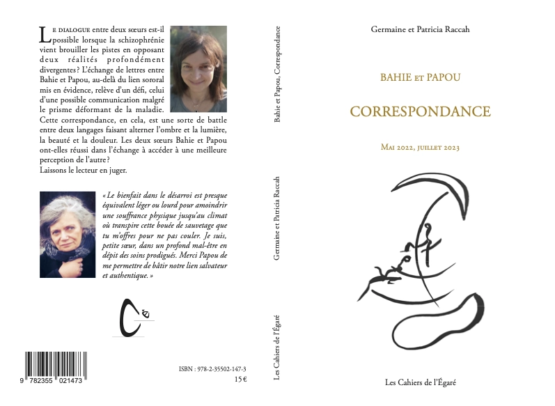
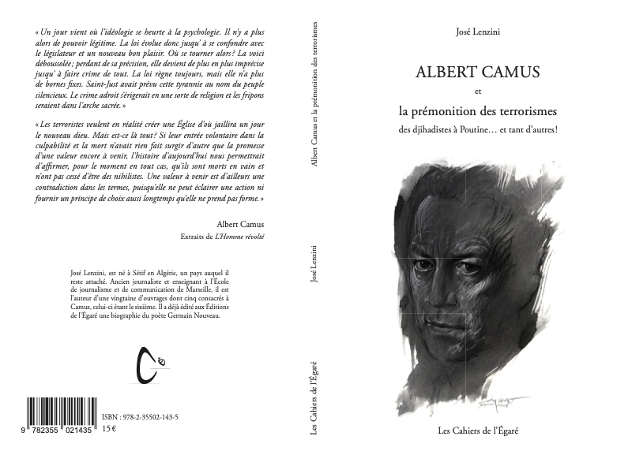
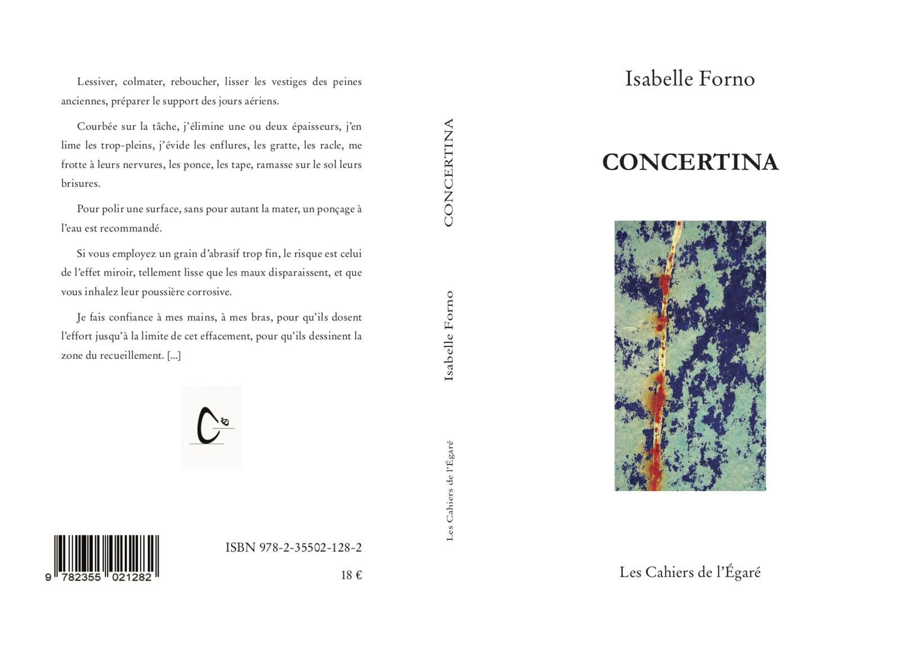

Apartés - Pierre Vigna
« Je suis très déçu par ma vie sur terre, très déçu. J’avais signé sur ma planète pour un séjour tout confort, quatre étoiles. L’agence m’avait promis une naissance sans problème, dans une famille unie et aimante, jusque-là pas d’erreur. Elle m’avait vendu une scolarité exemplaire, brillante et réussie, là, ça a un peu dévié... »

13,5 X 20,5, 184 pages - PVP 15 €Écrire est histoire de style, dit Buffon, mais écrire est surtout une histoire du regard. Sur quoi se pose un regard qu’un autre négligerait ?
Ce n’est pas un hasard si Pierre Vigna, de son premier métier éclairagiste de théâtre, a choisi d’allumer une lumière crue sur tel ou tel détail qui n’en est plus un une fois offert à son ironie et à sa tendresse.
Il faut prendre Apartés pour ce qu’il est, un acte engagé et sensible, un espace de dialogue grand ouvert à nos pensées et à nos doutes.
ISBN 978-2-35502-165-7
iAy MADRE mía! Théâtre documentaire - Luisa Gaillard Sanchez
Vas-y Lola raconte ton histoire ! Prends la parole ! Raconte toi !
Le ministère de l’Intérieur d’Espagne ouvre ses archives 80 ans après.

96 pages, format 13,5 X 20,5, PVP 12 €Ton nom y figure parmi des centaines de milliers d’autres noms de condamnés à se taire dans des geôles fascistes. Tu as survécu. Beaucoup cherchent encore des traces de leurs êtres chers. Les fosses sont ouvertes pour récupérer les os et les lambeaux de l’histoire.
Prends la parole Lola ! Celle d’une jeune femme et d’une mère ordinaire, qui rêvait simplement de dignité et de liberté !
Une petite histoire dans la grande histoire du 20e siècle. De la musique, des chansons, de la danse. Une tragi-comédie.
ISBN 978-2-35502-152-7
Bahie et Papou - Germaine et Patricia Raccah
Correspondance Mai 2022, Juillet 2023
Le dialogue entre deux sœurs est-il possible lorsque la schizophrénie vient brouiller les pistes en opposant deux réalités profondément divergentes ?

13,5 X 20,5, 138 pages, 7 illustrations par les deux soeurs PVP 15 €L’échange de lettres entre Bahie et Papou, au-delà du lien sororal mis en évidence, relève d’un défi, celui d’une possible communication malgré le prisme déformant de la maladie.
Cette correspondance, en cela, est une sorte de battle entre deux langages faisant alterner l’ombre et la lumière, la beauté et la douleur. Les deux sœurs Bahie et Papou ont-elles réussi dans l’échange à accéder à une meilleure perception de l’autre ?
ISBN 978-2-35502-147-3
Albert Camus et les prémonitions du terrorisme des djihadistes à Poutine... et tant d'autres - José Lenzini
Un jour vient où l'idéologie se heurte à la psychologie. Il n'y a plus alors de pouvoir légitime. La loi évolue donc jusqu'à se confondre avec le législateur et un nouveau bon plaisir. Où se tourner alors?

illustration de couverture Ernest Pignon-Ernest154 pages, 13,5 X 20,5, PVP 15 €
La voici déboussolée ; perdant de sa précision, elle devient de plus en plus imprécise jusqu'à faire crime de tout. La loi règne toujours, mais elle n'a plus de bornes fixes. Saint-Just avait prévu cette tyrannie au nom du peuple silencieux. Le crime adroit s'érigerait en une sorte de religion et les fripons seraient dans l'arche sacrée.
« Les terroristes veulent en réalité créer une Eglise d'où jaillira un jour le nouveau dieu. Mais est-ce là tout ? Si leur entrée volontaire dans la culpabilité et la mort n'avait rien fait surgir d'autre que la promesse d'une valeur encore à venir, l'histoire d'aujourd'hui nous permettrais d'affirmer, pour le moment en tout cas, qu'ils sont morts en vain et n'ont pas cessé d'être des nihilistes. Une valeur à venir est d'ailleurs une contradiction dans les termes, puisqu'elle ne peut éclairer une action ni fournir un principe de choix aussi longtemps qu'elle ne prend pas forme.»
ISBN : 978-2-35502-143-5
Concertina - Isabelle Forno
Vous comprendrez vite, au travers de ce livre au titre polysémique, combien elle aime jongler avec les mots, en déjouer les ruses, en stimuler les sens, en attiser les sons.
Sa musique vive et enjouée, semble s’échapper du « concertina », ce petit accordéon complice des danseurs et des clowns, aux sons mordants et doux, et que l’on ne tient pas avec des sangles. Ses mots parfois deviennent des cris, piqués au fil du barbelé, tel le « concertina » d’acier que l’on déroule sur les clôtures des sites ultra-sensibles, et composé de petites lames affûtées et tranchantes. Sous des formes courtes et variées, entre récits, nouvelles et poésies, avec ses textes tout à la fois pudiques et corrosifs, tendres et amers, drôles et tragiques, cueillis au plus près du réel ou portés par l’imaginaire, Concertina vous touche en plein cœur.

15 €La voici déboussolée ; perdant de sa précision, elle devient de plus en plus imprécise jusqu'à faire crime de tout. La loi règne toujours, mais elle n'a plus de bornes fixes. Saint-Just avait prévu cette tyrannie au nom du peuple silencieux. Le crime adroit s'érigerait en une sorte de religion et les fripons seraient dans l'arche sacrée.
« Les terroristes veulent en réalité créer une Eglise d'où jaillira un jour le nouveau dieu. Mais est-ce là tout ? Si leur entrée volontaire dans la culpabilité et la mort n'avait rien fait surgir d'autre que la promesse d'une valeur encore à venir, l'histoire d'aujourd'hui nous permettrais d'affirmer, pour le moment en tout cas, qu'ils sont morts en vain et n'ont pas cessé d'être des nihilistes. Une valeur à venir est d'ailleurs une contradiction dans les termes, puisqu'elle ne peut éclairer une action ni fournir un principe de choix aussi longtemps qu'elle ne prend pas forme.»
ISBN 978-2-35502-128-2